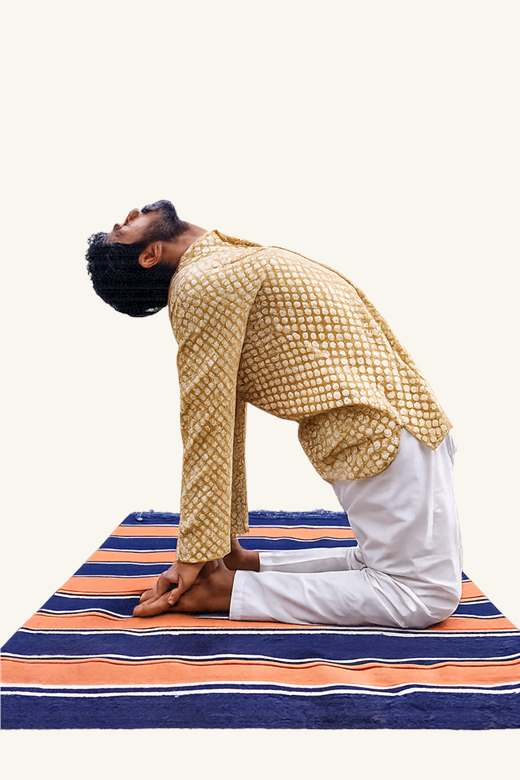

Book Consultation
30-minute consultation with founder Gautam Khandelwal, bringing 25 years of experience in naturopathy and natural healing.
Consultation details
Founder-led, focused and practical.
This 30-minute consultation is designed to understand your diabetes history, current lifestyle rhythm and next responsible step before any program or product recommendation.